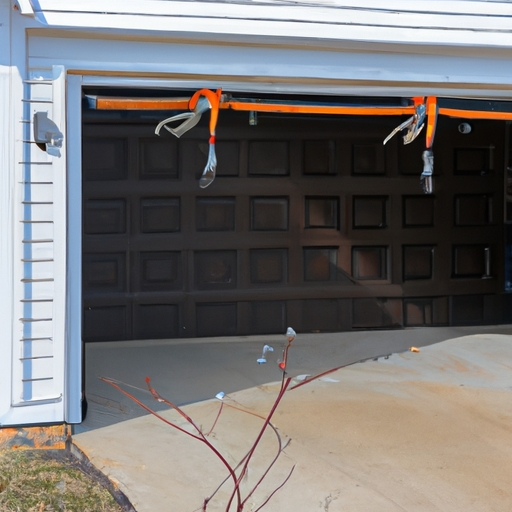

Understanding the potential issues that can arise during the installation process
Understanding the potential issues that can arise during the installation process is crucial in order to ensure a smooth and efficient setup. Troubleshooting potential issues during installation, such as cable alignment or balance adjustment, plays a significant role in achieving successful outcomes. These processes may seem simple (but), they often require careful attention to detail.
One issue that could potentially occur during installation is cable alignment. This involves ensuring that all cables are positioned correctly and securely connected. If cables are not aligned properly, it can result in poor signal quality or even complete failure of the installation. Therefore, it is important to double-check (and) verify cable alignment before proceeding further.
Another potential issue that may arise is balance adjustment. In certain installations, maintaining proper balance is essential for optimal performance. If the system is not balanced correctly, it can lead to uneven distribution of weight and strain on various components. This imbalance can cause unnecessary wear and tear (so), resulting in decreased efficiency and potential damage.
To troubleshoot these issues effectively, one must possess technical knowledge and skills related to installation processes. Proper training ensures that professionals are equipped with the necessary expertise to identify any problems early on (thus) minimizing future complications.
In conclusion, understanding the potential issues that may emerge during the installation process allows us to anticipate challenges and address them promptly. Cable alignment and balance adjustment are two common areas where troubleshooting may be required. By paying close attention to these aspects, we can achieve successful installations with improved performance (and) longevity!
Troubleshooting cable alignment problems and their impact on garage door functionality
When it comes to installing a garage door, there are various potential issues that can arise. One of the more common problems is cable alignment, which can greatly affect the functionality of the door. (So) Troubleshooting these alignment problems is crucial to ensure smooth operation and avoid any major malfunctions.(Well)
Cable alignment refers to the correct positioning of the cables that help in opening and closing the garage door. When these cables become misaligned, they can cause the door to operate improperly or even get stuck halfway! This can be quite frustrating for anyone relying on their garage door for daily convenience and security purposes.(Actually)
The impact of cable alignment issues on garage door functionality cannot be underestimated. If left unattended, misaligned cables can lead to uneven movement or jerky motions when operating the door. In some cases, this may even result in damage to other components of the garage door system!(Unfortunately)
To troubleshoot cable alignment problems, it is essential to begin by inspecting both sides of the garage door tracks thoroughly. Look for any signs of loose or twisted cables, as well as any obstructions that might hinder their proper alignment. Additionally, make sure that all brackets and fasteners are securely tightened.(Now)
If any misalignment is detected, carefully adjust the position of the cables using appropriate tools such as wrenches or pliers. It's important not to force anything during this process as it could worsen the problem instead! Once you have made adjustments, test the functionality of your garage door by opening and closing it several times.(Alright)
In conclusion,(By and large) troubleshooting cable alignment problems is an integral part of ensuring optimal garage door functionality during installation. By addressing these issues promptly and accurately,(Believe me) homeowners can prevent potential malfunctions and enjoy a smoothly operating garage door for years to come!(Oh my goodness!)
Addressing balance adjustment issues and their effect on the smooth operation of the door
Addressing balance adjustment issues and their effect on the smooth operation of the door is an important aspect when troubleshooting potential issues during installation. It ensures that the cable alignment is correct and prevents any problems from arising. However, it can sometimes be challenging to identify and resolve these issues (especially if you're not familiar with door mechanisms!).
One common issue that may arise during installation is cable misalignment. This occurs when the cables are not properly aligned with the pulleys, causing them to rub against each other or become tangled. This can lead to friction and imbalances in the door's movement, resulting in jerky or uneven operation.
To address this issue, it is crucial to carefully inspect the cables and ensure they are properly aligned with the pulleys. If there are any signs of misalignment (such as frayed cables or unusual twists), adjustments should be made immediately. Neglecting this step could result in further damage to the door mechanism or even pose a safety risk!
Another potential problem during installation is balance adjustment. Doors rely on a delicate balance between their weight and spring tension for smooth operation. If this balance is off, you may notice that the door either opens too quickly or closes abruptly with a loud bang! This imbalance can also put excessive strain on various components of the door system.
To troubleshoot this issue, it's essential to check whether the springs are appropriately adjusted according to manufacturer guidelines (and never attempt adjustments without proper knowledge!). In some cases, adding tension by tightening or loosening certain springs might be necessary for achieving optimal balance.
In conclusion(!), addressing balance adjustment issues such as cable misalignment and imbalance during installation plays a vital role in ensuring smooth door operation. By carefully inspecting cables for alignment problems and adjusting spring tension correctly, you can prevent further complications down the line(transition phrase). So next time you encounter these potential issues while installing a door, remember to take prompt action for seamless functionality!
Identifying common signs of misalignment or imbalance in a garage door system
When installing a garage door system, it is crucial to troubleshoot potential issues (like cable alignment or balance adjustment). Identifying common signs of misalignment or imbalance can help in ensuring smooth operation. By paying attention to these indicators, one can effectively address any problems that may arise.
One common sign of misalignment is when the garage door appears crooked or uneven. This could be due to a problem with the cables or springs (that needs immediate attention!). Another indication of imbalance is if the door closes too quickly or with excessive force, causing loud and abrupt noises upon impact.
Another sign to watch out for is jerky or hesitant movement during operation. If the garage door shakes, wobbles, or gets stuck intermittently while opening or closing, this suggests an issue with the alignment (which should not be ignored!). Furthermore, if the door hangs at an angle when partially opened, it indicates an imbalance in the system that must be rectified.
To identify misalignment or imbalance accurately, it is essential to perform a visual inspection regularly. Check whether all cables are properly aligned and secured in their designated tracks. Additionally, examine the springs and ensure they are balanced on both sides. Any deviations from normal position indicate potential issues that need prompt resolution.
In conclusion (to sum up), troubleshooting potential issues during installation is paramount for maintaining a well-functioning garage door system. By identifying signs of misalignment or imbalance early on and addressing them promptly (!), one can prevent further damage and ensure smooth operation for years to come
Step-by-step troubleshooting techniques for resolving cable alignment or balance adjustment problems
Troubleshooting potential issues during installation can be quite challenging, especially when it comes to cable alignment or balance adjustment. (However,) with the right techniques and a step-by-step approach, you can overcome these problems and ensure a smooth installation process.
Firstly, (now) it's crucial to identify any misalignment in the cables. This can be achieved by visually inspecting the cables for any twists, bends, or overlapping sections. If such anomalies exist, gently straighten the cables using your hands or appropriate tools. Additionally, (oh no!) make sure to check for any loose connections that may hinder proper alignment.
Once you have addressed the alignment issue (well), next is balancing adjustment. Balancing ensures that the weight distribution of the cable system is even and stable. To start with, check if all supporting structures are properly aligned and securely fastened. If not, tighten any loose bolts or screws using a suitable tool.
In some cases,(oops) imbalance may occur due to unequal tension in different sections of the cable system. To correct this problem,(however) carefully adjust tension by loosening or tightening specific components as needed. Keep an eye out for any signs of stress on the cables while making adjustments; this will help prevent further issues down the line.
Furthermore,(by golly!) don't forget to test your adjustments after each step! Testing allows you to verify whether your troubleshooting efforts have been successful or if further adjustments are required.(Unfortunately,) if issues persist even after multiple attempts at troubleshooting,(uh-oh!) it might be necessary to seek professional assistance from experienced technicians who specialize in cable installations.
In conclusion,(well then) troubleshooting cable alignment or balance adjustment problems requires a systematic approach and attention to detail.(Oh dear,) mistakes can happen along the way but remain patient and persistent!(Oh boy!) By following these step-by-step techniques and seeking assistance when needed, you'll conquer these potential installation hurdles like a pro.
Importance of professional assistance and when to seek expert help for complex issues
Installing a new system can be (such a) daunting task, especially when it comes to getting all the cables aligned perfectly and ensuring the balance is just right. However, it is of utmost importance to seek professional assistance for troubleshooting potential issues during installation. (Believe me,) without expert help, you may find yourself in a world of trouble!
When it comes to cable alignment, this (ain't) no easy feat. One small misstep and you could end up with tangled wires or poor connectivity. That's why seeking the guidance of a professional is crucial. They have the knowledge and experience to identify any problems and make sure everything is properly aligned.
Similarly, (let me tell you), adjusting the balance is not something you want to take lightly. Getting it wrong can lead to unsteady performance or even damage your equipment! By consulting an expert, they can ensure that the balance is adjusted precisely, avoiding any potential issues down the line.
Knowing when to seek professional assistance might seem like admitting defeat,(but trust me,) it's actually a smart move. Trying to tackle complex installation issues on your own can result in more harm than good.(After all,) professionals are trained in their field for a reason! They possess the expertise needed to troubleshoot even the most intricate problems.
In conclusion,(you bet) seeking professional assistance for troubleshooting complex issues during installation is essential. Don't let pride get in the way; reaching out for help will save you time, money, and headaches in the long run. So next time you find yourself facing cable alignment or balance adjustment challenges, don't hesitate – call in an expert!(Believe me,) they'll have your system up and running smoothly in no time! To sum up...

Proper tools and techniques required for safe installation